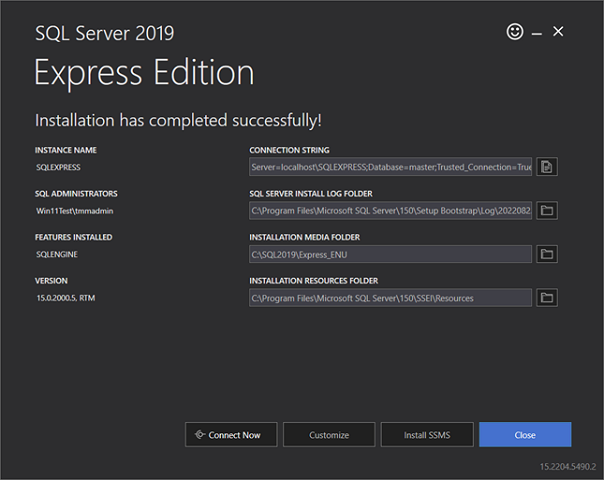
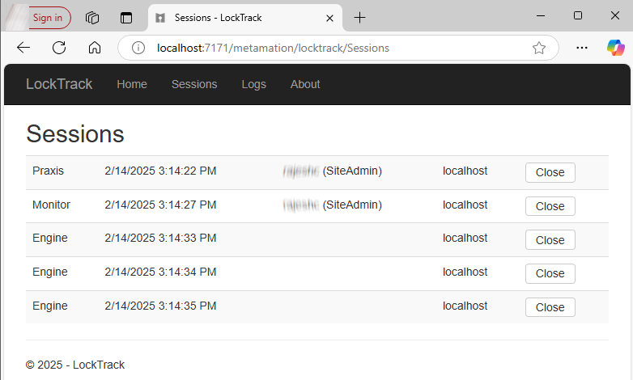

Instalacja serwera
Postępuj zgodnie z instrukcjami, aby zainstalować instalację Serwera TruSmartCAM wraz z SQL.
|
Uprawnienia administratora
Aby przeprowadzić tę instalację, użytkownik musi posiadać uprawnienia administratora. |
-
Uruchom Setup.TruSmartCAM.<version>.exe, aby rozpocząć instalację.
| Version to numer. |
-
Przeczytaj umowę licencyjną i wybierz I accept the agreement, a następnie kliknij Dalej .

Krok 1 : Lokalizacja instalacji
-
Określ folder instalacji lub zaakceptuj domyślną instalację
C:\Program Files\Metamation\Praxisi kliknij Dalej.-
C:\Program Files\Metamation\Praxis- Folder instalacji zawiera następujące foldery : Bin, MetaCAM, Samples i Tracker. -
C:\Program Data\Metamation- Folder danych zawiera następujące foldery : TruSmartCAM, TecZone i MetaCAM.
-

Krok 2 : Wybór komponentów
| Typ instalacji | Komponenty |
|---|---|
Full |
Server + Desktop client + Engine |
Client |
Desktop Client |
Server |
Server + Desktop client |
Station |
Wybiera wszystkie terminale stacji takie jak TecZone, MetaCAM, RightAngle(Bend Controller), Vulcan(Laser Machine Controller) |
Custom |
Wybiera według preferencji użytkownika. |
-
Wybierz Full Installation. Wybierz Code Senders i Bend Code Senders z TruSmartCAM Tools. Teraz typ instalacji zmieni się na Niestandardowe. Kliknij Dalej.

Krok 3 : Wybór instalacji SQL Server
|
Instalacja SQL Express 2022 jest wymagana tylko dla Serwera TruSmartCAM. Ta opcja nie jest dostępna dla instalacji klienta i synchronizacji. Ponadto jest ona domyślnie zaznaczona i instalowana po raz pierwszy, po czym może być pominięta. Jeśli SQL jest już zainstalowany na serwerze TruSmartCAM, użytkownik może pominąć Krok 3. |
-
W Select Additional Tasks : Kliknij Install SQL Express i kliknij Dalej.
-
W Ready to Install : Podsumowuje wszystkie funkcje instalacji i kliknij Install.

Krok 4 : Instalacja SQL Server
Po zainstalowaniu komponentów TruSmartCAM, instalator przechodzi do instalacji SQL Server. Zaakceptuj umowę licencyjną, aby kontynuować i zainstaluj SQL Express z domyślnymi opcjami.

Po zakończeniu instalacji kliknij Close i zakończ instalację.

| W zależności od wersji Windows zamknięcie instalacji SQL może wymagać ponownego uruchomienia. |
Krok 5 : Skróty pulpitu Windows
-
Po instalacji SQL, jeśli system nie uruchamia się ponownie, zaznacz pole wyboru Launch TruSmartCAM i kliknij Finish.
-
Jeśli system uruchamia się ponownie, uruchom skrót TruSmartCAM na pulpicie lub wpisz TruSmartCAM w Windows Start Program i Uruchom jako administrator.
| Instalacja serwera : Ikony skrótów TruSmartCAM i TruSmartCAM License są dostępne na pulpicie. + Instalacja klienta/SYNC : Tylko ikona skrótu TruSmartCAM dostępna na pulpicie. |

Krok 6 : Rejestracja licencji
-
W polu Serial Number wpisz TruSmartCAM Serial key dostarczony przez Trumpf Metamation Service Team. Wpisz <Company Name> w polu "Registered to" i E-Mail. Kliknij OK.

|
W przypadku gdy zapora sieciowa blokuje rejestrację licencji lub nie ma internetu na komputerze Serwera TruSmartCAM, licencja TruSmartCAM jest wykonywana poprzez aktywację offline. Wyślij e-mailem Prax.request z folderu C:\ProgramData\Metamation\Praxis do zespołu Trumpf Metamation Service. Zespół Trumpf Metamation dostarczy Prax.lock, który należy umieścić w tym folderze. |
Krok 7 : Początkowa jednorazowa konfiguracja
-
Wpisz nazwę bazy danych i ustaw lokalizację przechowywania danych. Zaznacz pole wyboru Użyj SQL Server i wybierz nazwę SQL Server, aby połączyć się z bazą danych. Kliknij OK.

-
Klient Desktop TruSmartCAM otwiera się i wyświetla Database Connection Succeeded w lewym dolnym rogu na dole.
-
Pliki konfiguracyjne TruSmartCAM, TecZone i MetaCAM są tworzone z domyślnymi plikami konfiguracyjnymi maszyn lub z maszynami licencyjnymi TruSmartCAM. Ta sama konfiguracja jest udostępniana między wszystkimi klientami TruSmartCAM.

Ekran powitalny pokazuje użytkownika LoginName systemu Windows jako login i nazwę TruSmartCAM. Pierwszy użytkownik TruSmartCAM jest uważany za Administrator strony. Podaj e-mail i hasło. Kliknij OK .
Zaznacz pole wyboru Zapamiętaj mnie , aby zapisać dane logowania na następny raz. Odznaczenie pola wyboru Zapamiętaj mnie spowoduje wyświetlenie okna dialogowego logowania i hasła za każdym razem, gdy aplikacja TruSmartCAM zostanie uruchomiona.

Krok 8 : Logowanie do TruSmartCAM
-
Zamknij TruSmartCAM i otwórz ponownie. System poprosi o wprowadzenie danych logowania TruSmartCAM.

-
Nazwa zalogowanego użytkownika jest wyświetlana obok ikony użytkownika w nagłówku aplikacji TruSmartCAM.

-
Po najechaniu na ikonę użytkownika system wyświetla:

-
Rolę użytkownika (na przykład: Programmer, Admin).
-
Skrót do wylogowania: Ctrl+L.
-
-
Kliknięcie ikony użytkownika otwiera menu umożliwiające:

-
Edytuj informacje… - Zaktualizuj dane profilu.
-
Zmień hasło… - Zmień hasło konta.
-
Wyloguj się - Wyloguj się z aplikacji.
-
Anuluj - Zamknij menu bez wprowadzania zmian.
-
Krok 9 : Konfiguracja maszyn fabrycznych
-
TruSmartCAM License [Wszystkie maszyny z włączonym bitem licencji] : Domyślna maszyna TruSmartCAM i materiał są uważane za konfigurację fabryczną.
-
TruSmartCAM License [Brak demo i włączony pojedynczy bit maszyny] : Ta pojedyncza maszyna i domyślny materiał są uważane za konfigurację fabryczną.
-
(Open → Import) nową część z
C:\Program Files\Metamation\Praxis\Samples\Partsi sprawdź, czy część została pomyślnie zaimportowana.

Uwaga 1 : TruSmartCAM Monitor
-
TruSmartCAM Monitor z instalacją Engine (uprawnienia Site admin):
-
TruSmartCAM Monitor z Engine wraz z uprawnieniami Site Admin TruSmartCAM ma następujące opcje:
-
Push konfiguracji TruSmartCAM, konfiguracji TecZone, MetaCAM do wszystkich klientów TruSmartCAM. Ma również uprawnienia do tworzenia nowego logowania użytkownika TruSmartCAM.
-
Show Agents pokazuje całkowitą liczbę dostępnych silników do wykonywania zadań automatyzacji zgodnych z licencją TruSmartCAM.
-
-

-
TruSmartCAM Monitor bez instalacji Engine (uprawnienia Site admin):

-
TruSmartCAM Monitor bez instalacji Engine (uprawnienia nie-site admin):

|
Komputer, na którym działa aplikacja TruSmartCAM, musi mieć zainstalowany komponent Engine TruSmartCAM [komputer serwera lub w każdej instalacji klienta]. Komputer z zainstalowanym komponentem Engine TruSmartCAM musi działać 24/7, aby wykonywać wszystkie zadania automatyzacji. |
Uwaga 2 : Lock Tracker
-
Kliknij skrót TruSmartCAM License dostępny na pulpicie Serwera TruSmartCAM. Możesz również otworzyć http://localhost:7171/metamation/locktrack w przeglądarce internetowej.
Otwiera to moduł Lock Tracker z informacjami o licencji, bieżącymi informacjami o sesji TruSmartCAM i logiem.
Strona HOME LockTracker : Pokazuje numer seryjny TruSmartCAM, informacje o dacie wygaśnięcia numeru seryjnego i dostępne informacje o bitach numeru seryjnego.

Strona SESSIONS LockTracker : Bieżące informacje o podłączonym Serwerze TruSmartCAM takie jak komputer klienta Desktop TruSmartCAM, status PMonitor, PEngine.

Strona LOGs LockTracker : Start klienta TruSmartCAM i wylogowanie | start Pmonitor i status połączenia/rozłączenia PEngine itp. mogą być przeglądane na tej stronie Logs.

Uwaga 3 : OpenGL
-
Aplikacja TruSmartCAM zamyka się natychmiast podczas otwierania, a także pmonitor nie jest wyświetlany na pasku zadań.
-
Oznacza to problem z OpenGl.
-
Inny sposób potwierdzenia: Otwórz C:\Program Files\Metamation\Praxis\Bin\Flux.exe, który wyświetla okno dialogowe błędu dotyczące problemu z OpenGL.

-
Aktualizacja C:\ProgramData\Metamation\Praxis\Prax.ini, sekcja opcji z GLVersion=1 zapewni, że aplikacja TruSmartCAM zostanie pomyślnie otwarta.
[Options]
GLVersion=1.0